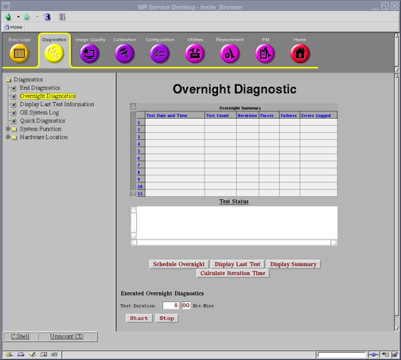
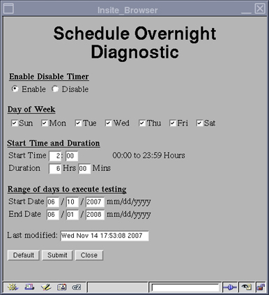
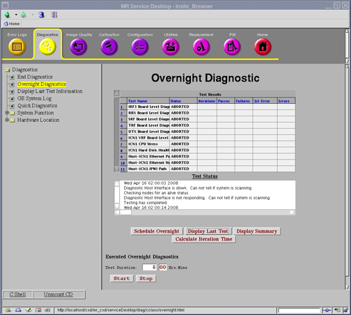
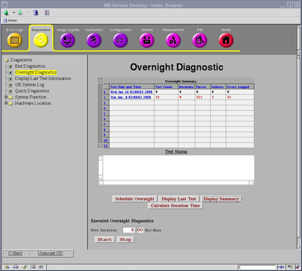
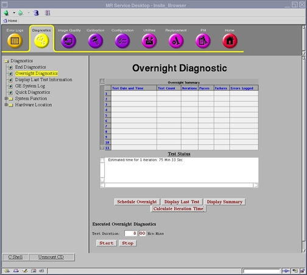

Operating Documentation
Direction 5670000, Rev# 1
Optima MR450w 1.5T Service Methods
Module Version 2.0, Version Date 6/27/08
Operating Documentation |
Diagnostics >> Overnight Diagnostics
Illustration 1: Overnight Diagnostics

The purpose of Overnight Diagnostics is to run batch testing during off-peak times.
The following Pass/Fail tests will be performed whenever Overnight Diagnostics are run.
Host-ICN(x) Ethernet Path
Host-ICN(x) Ethernet Stress
Host-ICN(x) IPMI Path
Host-ICN(x) Remote Shell
ICN(x) Infiniband Connectivity
ICN(x) Infiniband Stress
ICN(x) CPU Stress
ICN(x) Hard Disk Health
ICN(x) Hard Disk Stress
ICN(x) Hard Disk Integrity
ICN(x) VRF Board Level Diagnostics
ICN(x) VRF->ICN Fast Feedback Path
ICN(x) RRX->VRF Datapath
ICN(x) VRF->ICN Fast Feedback Path
ICN(x) RRX->VRF Datapath
Keyboard Audio Test
Keyboard Loop Test
Keyboard SCP Loop Test
PAC Power Up
PAC Resp.
SPU ->PAC DP
SPU->CFB DP
Spectro RF Amp I/F
RF Amp Interface
RF Calib
DTX -> RRX DP
TNS DP
SRF->RRX+DTX DP
SCP->CAN DP
Peak Forward Power Overload Circuit Test
Peak Forward Power Measurement Circuit Test
Junction Temperature Overload Circuit Test
Junction Temperature Measurement Circuit Test
Peak Reflected Power Overload Circuit Test
Peak Reflected Power Measurement Circuit Test
Average Forward Power Measurement Circuit Test
Average Reflected Power Measurement Circuit Test
SRF Board Level Diagnostics
SRF->IRF DP
IRF3 Board Level Diagnostics
DTX Board Level Diagnostics
RRX Board Level Diagnostics
SRF->TRF DP
PHPS Board Level Diagnostics
CFB Board Level Diagnostics
SRI Board Level Diagnostics
SRI MCPDB Datapath
SRI - CFB Loopback
TRF Board Level Diagnostics
Cooling Cabinet Data Path Diag
RF Hub Board Level Diagnostic
RF Hub Shutdown Diagnostic
RF Hub - Receiver Datapath Diagnostic
RF Hub Reset Diagnostic
Receiver Reset Diagnostic
RF Hub CAN Fiber Loopback Diagnostic
| NOTE: | The system will automatically determine which of the above tests are available and skip any tests that do not apply. |
No special requirements.
From Common Service Desktop, select Diagnostics menu, then select Overnight Diagnostics.
Fill in the necessary information on the GUI for running overnight diagnostics, then select [Submit](see Illustration 2).
Select [Close]. The overnight diagnostics will run at the appointed time.
Illustration 2: Schedule Overnight Diagnostic

Other options available are:
Display Last Test displays the last diagnostic run as shown in Illustration 3.
Illustration 3: Display Last Test

Display Summary brings up a summary of diagnostics run as shown in Illustration 4.
Illustration 4: Display Summary

Calculate Iteration Time analyzes how long the overnight diagnostics will take to run as shown in Illustration 5.
Illustration 5: Calculate Iteration Time

The diagnostic will either pass or fail as displayed in the Overnight Summary. Follow error messages for subsequent actions if necessary.